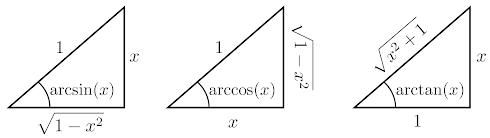

Derivadas
Teoremas de derivación
Cálculo de derivadas
Introducción
En cualquier asignatura de Geometría Analítica se realiza un estudio de líneas rectas en el plano. Una de las propiedades que define a una recta es su pendiente \(m\), que es una medida de la inclinación de la recta. Suponiendo que la recta contiene dos puntos \((x_1,y_1)\) y \((x_2,y_2)\), su pendiente está definida por $$ m = \frac{y_2-y_1}{x_2-x_1} $$
La pendiente mide la inclinación de una recta al calcular su razón de cambio: la pendiente obtiene la razón a la que asciende verticalmente una recta por unidad de avance horizontal (en inglés se suele cantar rise over run para recordar esto). Una pendiente positiva indica que la recta asciende verticalmente al tiempo que se avanza horizontalmente, y una pendiente negativa indica que la recta desciende verticalmente al tiempo que se avanza horizontalmente (esto debería recordar a la noción de función creciente y decreciente). Asimismo, una pendiente de valor absoluto grande implica una mayor inclinación de la recta (al punto que \(m\to \pm\infty\) cuando las rectas tienden a ser verticales), y una pendiente cercana a cero implicará una recta poco inclinada. Si \(m=0\), la recta es horizontal.

La pendiente de una recta es tan importante que la recta misma se puede caracterizar conociendo tan solo uno de sus puntos y su pendiente. Una definición común de recta es aquel lugar geométrico cuyos puntos guardan siempre la misma pendiente entre ellos. Esto tiene sentido, pues una recta permanece siempre igual de inclinada. Así, suponiendo que se conoce un punto de la recta, cualquier punto \((x,y)\) que guarde una determinada pendiente \(m\) con él formará parte de la recta. Suponiendo que este punto es \((x_1,y_1)\), una ecuación que define a la recta será $$ m = \frac{y-y_1}{x-x_1} $$ De donde se despeja \(y\) para obtener $$ y = m (x-x_1) + y_1 $$ Y si se desea que esta ecuación haga de regla de correspondencia de una función, se puede definir \(f\) mediante $$ f(x) = m(x-x_1) + y_1 $$ Una vez habiendo discutido esto, piénsese si no sería agradable tener esta noción de pendiente para funciones más complejas que una simple recta.
Por ejemplo, dada una función \(s\) tal que \(s(t)\) es la posición de un móvil sobre una recta en el tiempo \(t\), si \(s\) fuera una recta se tendría que la pendiente asociada a ella es su velocidad en cualquier instante. Si \(s\) fuese más compleja ya no se tendría la facilidad de describir la velocidad en cualquier instante de la trayectoria. No obstante, si se calculara la pendiente entre dos puntos \(s(t_1)\) y \(s(t_2)\), se podría aproximar la velocidad que tiene el móvil en el intervalo de tiempo \([t_1,t_2]\). No es difícil observar que nuestra aproximación mejora si \(t_1\) y \(t_2\) son instantes de tiempo cercanos, pues esto se acercaría cada vez más a un valor de velocidad "instantánea". Para disminuir el número de variables que se manejan, supóngase que la duración del intervalo de tiempo \(t_2-t_1\) es \(h\), por lo que \(t_2=t_1+h\). Nótese que se puede prescindir del subíndice si solamente se habla de un \(t_1\) en general, por lo que se puede pensar en una \(t\) cualquiera y un incremento temporal \(h\) arbitrario. La velocidad aproximada entre el tiempo \(t\) y \(t+h\) se da entonces por $$ v(t) = \frac{s(t+h)-s(t)}{h} $$
Que simplemente toma la velocidad de pendiente y adopta la notación de incrementos propuesta. En términos gráficos, esta velocidad es la pendiente de una recta secante a la gráfica que la corta en los puntos \((t,s(t))\) y \((t+h,s(t+h))\). Así, para obtener la velocidad "instantánea" de la que se habló, bastará con acercar estos dos puntos hasta que la recta que definen sea tangente a la gráfica (siguiendo la noción intuitiva que se tiene de una recta tangente). Esta noción de cercanía recuerda a la sección de límites, y se puede ver que, a fin de acercar arbitrariamente ambos puntos, basta con hacer el incremento \(h\) arbitrariamente pequeño. Así, se define la velocidad instantánea como $$ v(t) = \lim_{h\to 0}\frac{s(t+h)-s(t)}{h} $$

En general, para cualquier función \(f\) con regla de correspondencia \(f(x)\), se le llama derivada a la función \(f'\) definida por $$f'(x)=\lim_{h\to0}\frac{f(x+h)-f(x)}{h}$$ Intuitivamente, la derivada evaluada en un punto de la función arroja la razón de cambio de la función en dicho punto, y se puede ver como la pendiente de la recta tangente a la gráfica de la función en dicho punto (aunque la noción de recta tangente no está bien definida, e incluso sería más formal definir la tangencia a partir de la derivada).
La notación que se usa para indicar derivadas es llamada notación de Lagrange, que ha probado ser la menos ambigua y más práctica para estos casos. No obstante, otra notación ampliamente utilizada es la de Leibniz, que es $$ f'(x) = \frac{\text{d}f(x)}{\text{d}x} $$
La derivación de una función resulta ser un proceso no muy laborioso para funciones simples, como se mostrará a continuación.
Ejemplo.
- Probar que la derivada de una recta en cualquier punto es su pendiente. Demostración. Ya se vio que la regla de correspondencia que corresponde a una recta es \(f(x)=m(x-x_1)+y_1\). Para facilitar la notación, sea \(b=mx_1+y_1\). Se tiene entonces $$ f(x) = mx + b $$ Obteniendo la derivada, $$f'(x)=\lim_{h\to0}\frac{m(x+h)+b-mx-b}{h}=\lim_{h\to0}\frac{mh}{h}=\lim_{h\to0}m=m$$ Por lo que \(f'(x)=m\) para cualquier \(x\), que es lo que se quería probar. \(\blacksquare\)
- Sea \(f:\mathbb{R}\to\mathbb{R}\) con \(f(x)=x^2\). Obtener \(f'(x)\). Solución. $$ \begin{align}\lim_{h\to0}\frac{(x+h)^2-x^2}{h} & = \lim_{h\to0}\frac{x^2+2xh+h^2-x^2}{h} = \lim_{h\to0}\frac{2xh+h^2}{h}\\ & = \lim_{h\to0}2x+h = 2x \end{align} $$ Por lo que \(\boxed{f'(x)=2x}\).
Aunque en estos casos los procedimientos resultaron ser sencillos, será de mayor utilidad conocer algunos teoremas de derivación que facilitarán enormemente el proceso de derivación.
Teoremas de derivación.
Primeramente, formalicemos las definiciones de la sección anterior.
Definición. La derivada de una función \(f\) es la función \(f'\) cuya regla de correspondencia es $$f'(x)=\lim_{h\to0}\frac{f(x+h)-f(x)}{h}$$
Definición. Una función es derivable o diferenciable en un punto \(a\) si el siguiente límite existe: $$\lim_{h\to0}\frac{f(a+h)-f(a)}{h}$$ Más aun, se dice que una función es derivable o diferenciable en un intervalo \((a,b)\) si es derivable en todo \(x\in (a,b)\).
En la sección anterior se probó que \(f'(x)=2x\) cuando \(f(x)=x^2\). Para \(f(x)=x^3\) se tiene que $$ \begin{align}f'(x) & = \lim_{h\to0}\frac{(x+h)^3-x^3}{h} = \lim_{h\to0}\frac{x^3+3x^2h+3xh^2+h^3-x^3}{h}\\ & = \lim_{h\to0}3x^2+3xh+h^2 = 3x^2 \end{align} $$ Por lo que \(f'(x)=3x^2\). Para notar un patrón, derivemos \(f(x)=x^4\): $$ \begin{align}f'(x) & = \lim_{h\to0}\frac{(x+h)^4-x^4}{h} = \lim_{h\to0}\frac{x^4+4x^3h+6x^2h^2+4xh^3+h^4-x^4}{h}\\ & = \lim_{h\to0}4x^3+6x^2h+4xh^2+h^3 = 4 x^3 \end{align} $$ Así, se puede conjeturar que, dada \(f\) definida por \(f(x)=x^n\), se tiene \(f'(x)=nx^{n-1}\).
Teorema. Regla de la potencia (versión 1). Sea \(f:\mathbb{R}\to\mathbb{R}\) con \(f(x)=x^n\), \(n\in\mathbb{N}\). Así, \(f'(x)=nx^{n-1}\).
Demostración. $$ \begin{align}f'(x) & = \lim_{h\to0}\frac{(x+h)^n-x^n}{h} = \lim_{h\to0}\frac{\displaystyle\sum_{k=0}^{n}{{n}\choose{k}}x^{n-k}h^k-x^n}{h}\\ & = \lim_{h\to0}\frac{x^n+nx^{n-1}h+\displaystyle\sum_{k=2}^{n}{{n}\choose{k}} x^{n-k}h^k-x^n}{h}\\ & = \lim_{h\to0}\left(nx^{n-1}+\sum_{k=2}^{n}{{n}\choose{k}}x^{n-k}h^{k-1}\right)\\ & = nx^{n-1} \end{align} $$ Que es lo que se quería demostrar. \(\blacksquare\)
Del problema 1 en la sección de introducción se obtiene como corolario lo siguiente:
Teorema. Sea \(f:\mathbb{R}\to\mathbb{R}\).
- Si \(f(x)=c\) con \(c\) constante, entonces \(f'(x)=0\).
- Si \(f(x)=cx\) con \(c\) constante, entonces \(f'(x)=c\).
Ejemplo. Hallar la derivada de \(f(x)=x^2+5x+7\).
Solución. $$ \begin{align}f'(x) & = \lim_{h\to0}\frac{(x+h)^2+5(x+h)+7-x^2-5x-7}{h}\\ & = \lim_{h\to0}\frac{x^2+2xh+h^2+5x+5h+7-x^2-5x-7}{h}\\ & = \lim_{h\to0}2x+h+5 \\ & = 2x+5 \end{align} $$ Obsérvese en el ejemplo que la derivada de \(x^2\) es \(2x\), la derivada de \(5x\) es \(5\) y la derivada de \(7\) es \(0\). Así, $$ \frac{\text{d}}{\text{d}x}(x^2+5x+7) = \frac{\text{d}}{\text{d}x}(x^2) + \frac{\text{d}}{\text{d}x}(5x) + \frac{\text{d}}{\text{d}x}(7)$$ Por lo que, al menos para este caso, la derivada abre sumas. Probaremos que esto es verdad en general.
Teorema. Sean \(f\) y \(g\) derivables. Entonces \(f+g\) es derivable y $$(f+g)'(x)=f'(x)+g'(x)$$
Demostración. Por la definición de derivada, $$ \begin{align}(f+g)'(x) & = \lim_{h\to0}\frac{(f+g)(x+h)-(f+g)(x)}{h} = \lim_{h\to0}\frac{f(x+h)+g(x+h)-f(x)-g(x)}{h}\\ & = \lim_{h\to0}\frac{f(x+h)-f(x)}{h}+\frac{g(x+h)-g(x)}{h} \end{align} $$ Y como \(f\) y \(g\) son derivables, cada límite existe por su cuenta. Entonces $$ \begin{align}(f+g)'(x) & = \lim_{h\to0}\frac{f(x+h)-f(x)}{h}+\frac{g(x+h)-g(x)}{h}\\ & = \lim_{h\to0}\frac{f(x+h)-f(x)}{h}+\lim_{h\to0}\frac{g(x+h)-g(x)}{h}\\ & = f'(x)+g'(x) \end{align} $$ Que es lo que se quería demostrar. \(\blacksquare\)
En el caso del producto, la regla de derivación no es tan simple (la derivada no se distribuye sobre el producto). No obstante, hay una agradable simetría en la ecuación.
Teorema. Regla del producto. Sean \(f\) y \(g\) derivables. Entonces \(f\cdot g\) es derivable y $$(f\cdot g)'(x)=f'(x)g(x)+f(x)g'(x)$$
Demostración. Por la definición de derivada, $$ \begin{align}(f\cdot g)'(x) & = \lim_{h\to0}\frac{(f\cdot g)(x+h)-(f\cdot g)(x)}{h}\\ & = \lim_{h\to0}\frac{f(x+h) g(x+h)+f(x+h) g(x)-f(x+h) g(x)-f(x) g(x)}{h}\\ & = \lim_{h\to0}\frac{g(x)(f(x+h)-f(x))}{h}+\frac{f(x+h)(g(x+h)-g(x))}{h}\\ & = \lim_{h\to0} \frac{g(x)(f(x+h)-f(x))}{h}+\lim_{h\to0}\frac{f(x+h)(g(x+h)-g(x))}{h}\\ & = g(x)f'(x)+f(x)g'(x)=f'(x)g(x)+f(x)g'(x) \end{align} $$ Que es lo que se quería probar. \(\blacksquare\)
Esta demostración echa mano de dos teoremas que no hemos demostrado, que son la existencia del límite \(\displaystyle \lim_{h\to 0}f(x+h)=f(x)\) cuando \(f\) es continua, y la continuidad de una función derivable. Esto lo demostraremos a continuación.
Lema. Una función \(f\) es continua en \(a\) si y solo si \(\displaystyle\lim_{h\to 0}f(a+h)=f(a)\).
Demostración. Sea \(x=a+h\), y obsérvese que \(x\to a\) cuando \(h\to 0\). Como \(\displaystyle\lim_{x\to a}f(x)=f(a)\), por la sustitución se tiene que este límite es equivalente a \(\displaystyle\lim_{h\to 0}f(a+h)=f(a)\). \(\blacksquare\)
Teorema. Si \(f\) es derivable en \(a\), entonces \(f\) es continua en \(a\).
Demostración. Se tiene que $$ \begin{align}\lim_{h\to 0}f(a+h)-f(a)&=\lim_{h\to 0}\frac{f(a+h)-f(a)}{h}\cdot h\\ & = \lim_{h\to 0}\frac{f(a+h)-f(a)}{h}\cdot \lim_{h\to 0}h\\ & = f'(a)\cdot 0=0 \end{align} $$ Que se asegura por la derivabilidad de \(f\) en \(a\). Así, \(\displaystyle\lim_{h\to 0}f(a+h)-f(a)=0\), de donde \(\displaystyle\lim_{h\to 0}f(a+h)=f(a)\). Por el lema, \(f\) es continua. \(\blacksquare\)
Continuaremos ahora con la derivada de operaciones entre funciones. Puesto que ya se derivó la suma y el producto, el paso natural siguiente es el cociente. Para ello, al igual que se hizo en límites, se demostrará un lema referente al inverso multiplicativo.
Lema. Sea \(g\) derivable. Entonces \(\frac{1}{g}\) es derivable y $$ \left(\frac{1}{g}\right)'(x)=\frac{-g'(x)}{[g(x)]^2} $$
Demostración. Por definición de derivada, $$ \begin{align} \left(\frac{1}{g}\right)'(x) & = \lim_{h\to0}\frac{(\frac{1}{g})(x+h)-(\frac{1}{g})(x)}{h}\\ & = \lim_{h\to0}\frac{\frac{1}{g(x+h)}-\frac{1}{g(x)}}{h}\\ & = \lim_{h\to0}\frac{g(x)-g(x+h)}{h\,g(x)g(x+h)}\\ & = \frac{\displaystyle\lim_{h\to0}\frac{g(x+h)-g(x)}{h}} {\displaystyle\lim_{h\to0}g(x)g(x+h)}\\ & = \frac{-g'(x)}{[g(x)]^2} \end{align} $$ Que es lo que se deseaba probar. \(\blacksquare\)
Teorema. Regla del cociente. Sean \(f\) y \(g\) derivables. Entonces \(\frac{f}{g}\) es derivable y $$ \left(\frac{f}{g}\right)'(x) = \frac{f'(x)g(x) - f(x)g'(x)}{[g(x)]^2} $$
Demostración. Por definición de derivada, aplicando el lema y la regla del producto, $$ \begin{align} \left(\frac{f}{g}\right)'(x) & = \left[\frac{f(x)}{g(x)}\right]'=f(x)\cdot\left(\frac{1}{g}\right)(x)\\ & = f'(x)\cdot\left(\frac{1}{g}\right)(x)+f(x)\cdot \left(\frac{1}{g}\right)'(x)\\ & = f'(x)\cdot\left(\frac{1}{g}\right)(x)+f(x)\cdot \frac{-g'(x)}{[g(x)]^2}\\ & = \frac{f'(x)}{g(x)}-\frac{f(x)g'(x)}{[g(x)]^2}\\ & = \frac{f'(x)g(x)-f(x)g'(x)}{[g(x)]^2} \end{align} $$ Que es lo que se deseaba demostrar. \(\blacksquare\)
Esto nos lleva a un resultado muy interesante al derivar \(f(x)=x^{-n}\), con \(n\in\mathbb{N}\). Recordando que \(x^{-n}=\frac{1}{x^n}\), aplicando el lema se tiene $$ f'(x) = \frac{-nx^{n-1}}{(x^{-n})^2}=\frac{-nx^{n-1}}{x^{-2n}} = -nx^{-n-1} $$ Haciendo \(-n=m\), se obtuvo que \(f'(x)=mx^{m-1}\) con \(m\) un entero negativo. Esto nos lleva al siguiente teorema:
Teorema. Regla de la potencia (versión 2). Sea \(f:\mathbb{R}\to\mathbb{R}\) con \(f(x)=x^n\), \(n\in\mathbb{Z}\). Así, \(f'(x)=nx^{n-1}\).
La última operación que nos falta es la composición, y el teorema que le corresponde es el más complejo de entre todos, aunque probablemente el más poderoso.
Teorema. Regla de la cadena.Sean \(f\) y \(g\) derivables. Entonces \(f\circ g\) es derivable y $$(f\circ g)'(x)=f'(g(x))\cdot g'(x)$$
Demostración. Sea \(\phi\) definida por $$ \phi(h) = \left\{\begin{matrix} \frac{f(g(x+h))-f(g(x))}{g(x+h)-g(x)} & g(x+h)-g(x)\not = 0\\ f'(g(x)) & g(x+h)-g(x) = 0 \end{matrix}\right. $$ Como \(f\) es derivable en \(g(x)\), $$ \lim_{k\to 0}\frac{f(g(x)+k)-f(g(x))}{k}=f'(g(x)) $$ Así, \(\forall > 0 \,\exists \delta' > 0\) tal que \(\forall k, \; 0 < |k| < \delta\) implica $$ \left|\frac{f(g(x)+k)-f(g(x))}{k}-f'(g(x))\right| < \varepsilon $$ Como \(g\) es derivable, entonces es continua y \(\forall\delta' > 0 \,\exists\delta > 0\) tal que \(\forall h, \; |h| < \delta\) implica \(|g(x+h)-g(x)| < \delta'\). Así, sea \(h\) tal que \(|h| < \delta\), y sea \(k=g(x+h)-g(x)\not = 0\). Entonces, $$ \phi(h) = \frac{f(g(x+h))-f(g(x))}{g(x+h)-g(x)}=\frac{f(g(x)+k)-f(g(x))}{k} $$ Como \(|h| < \delta\), entonces \(|g(x+h)-g(x)|=|k| < \delta'\), de donde \(|\phi-f'(g(x))| < \varepsilon\). Así, $$ \lim_{h\to 0}\phi(h) = f'(g(x)) $$ Por lo que \(\phi\) es continua en cero. Si \(h\not=0\), $$ \begin{align} \frac{f(g(x+h))-f(g(x))}{h} & = \frac{f(g(x+h))-f(g(x))}{g(x+h)-g(x)}\cdot\frac{g(x+h)-g(x)}{h}\\ & = \phi(h)\cdot \frac{g(x+h)-g(x)}{h} \end{align} $$ Que incluso se cumple al tener \(g(x+h)-g(x)=0\), pues ambos miembros serían cero. Así, $$ \begin{align}(f\circ g)'(x) & = \lim_{h\to0}\frac{f(g(x+h))-f(g(x))}{h} = \lim_{h\to0}\phi(h)\cdot \frac{g(x+h)-g(x)}{h}\\ & = \lim_{h\to0}\phi(h)\cdot \lim_{h\to0}\frac{g(x+h)-g(x)}{h} = f'(g(x))\cdot g'(x) \end{align} $$ La separación del límite se asegura por la continuidad en cero de \(\phi\) y la derivabilidad de \(g\). \(\blacksquare\)
Para cerrar con la sección, se demostrará el teorema para funciones inversas.
Teo. Regla de la función inversa. Sea \(f\) invertible y derivable en \(f^{-1}(x)\). Entonces \(f^{-1}\) es derivable en \(x\) y $$(f^{-1})'(x)=\frac{1}{f'(f^{-1}(x))}$$
Demostración. Sea \(x=f(y)\). Entonces $$\lim_{h\to0}\frac{f^{-1}(x+h)-f^{-1}(x)}{h}=\lim_{h\to0}\frac{f^{-1}(x+h)-y}{h}$$ Defínase \(k\) mediante \(x+h=f(y+k)\), de donde \(k = f^{-1}(x+h)-y\) y \(k = f^{-1}(x+h)-f^{-1}(x)\). Obsérvese que \(k\to0\) cuando \(h\to0\).Así $$ \begin{align}(f^{-1})'(x) & = \lim_{h\to0}\frac{f^{-1}(x+h)-y}{h}\\ & = \lim_{k\to0}\frac{f^{-1}(f(y+k))-y}{f(y+k)-x}\\ & = \lim_{h\to0}\frac{k}{f(y+k)-f(y)}\\ & = \lim_{h\to0}\frac{1}{\frac{f(y+k)-f(y)}{k}}\\ & =\frac{1}{\lim_{h\to0}\frac{f(y+k)-f(y)}{k}}\\ & = \frac{1}{f'(y)}\\ & = \frac{1}{f'(f^{-1}(x))} \end{align} $$ Que es lo que se deseaba demostrar. \(\blacksquare\)
Este teorema da una recompensa inmediata. Supóngase que \(f(x)=x^n\) con \(n\in\mathbb{Z}\). Así, \(f^{-1}(x)=x^\frac{1}{n}\). Aplicando la regla de la función inversa, $$(f^{-1})(x)=\frac{1}{n(x^{\frac{1}{n}})^{n-1}}=\frac{1}{n}x^{\frac{1}{n}-1}$$ Obsérvese que haciendo \(\frac{1}{n}=a\), se tiene que la regla de la potencia funciona para recíprocos de enteros. No obstante, se puede hacer más. Sea \(g(x)=x^{\frac{m}{n}}=(x^{\frac{1}{n}})^m\). Aplicando la regla de la cadena y el resultado anterior, $$g'(x)=m(x^{\frac{1}{n}})^{m-1}\cdot\frac{1}{n}x^{\frac{1}{n}-1}=\frac{m}{n}x^{\frac{m-1}{n}+\frac{1}{n}-1}=\frac{m}{n}x^{\frac{m}{n}-1}$$ Y haciendo \(\frac{m}{n}=q\), se llega al teorema final:
Teo. Regla de la potencia (versión 3).Sea \(f:\mathbb{R}\to\mathbb{R}\) con \(f(x)=x^n\), \(n\in\mathbb{Q}\). Así, \(f'(x)=nx^{n-1}\).
Cálculo de derivadas.
Ejemplo.Calcular las derivadas de las siguientes funciones mediante la definición.
- \(f(x)=5\) $$\begin{align}f'(x)=\lim_{h\to0}\frac{5-5}{h}=\lim_{h\to0}\frac{0}{h}=\lim_{h\to0}0=\boxed{0}\end{align}$$
- \(f(x)=\frac{1}{x}\) $$ \begin{align}f'(x) & = \lim_{h\to0}\frac{\frac{1}{x+h}-\frac{1}{x}}{h} = \lim_{h\to0}\frac{x-x-h}{hx(x+h)} = \lim_{h\to0}\frac{-h}{hx(x+h)}\\ & = \lim_{h\to0}\frac{-1}{x(x+h)} = \boxed{-\frac{1}{x^2}} \end{align} $$
- \(f(x)=\sqrt{x}\) $$ \begin{align}f'(x) & = \lim_{h\to0}\frac{\sqrt{x+h}-\sqrt{x}}{h} = \lim_{h\to0}\frac{\sqrt{x+h}-\sqrt{x}}{h}\cdot\frac{\sqrt{x+h}+\sqrt{x}}{\sqrt{x+h}+\sqrt{x}} = \lim_{h\to0}\frac{x+h-x}{h(\sqrt{x+h}+\sqrt{x})}\\ & = \lim_{h\to0}\frac{h}{h(\sqrt{x+h}+\sqrt{x})} = \lim_{h\to0}\frac{1}{\sqrt{x+h}+\sqrt{x}} = \boxed{\frac{1}{2\sqrt{x}}} \end{align} $$
- \(f(x)=3x-1\) $$ \begin{align}f'(x) & = \lim_{h\to0}\frac{3(x+h)-1-3x+1}{h} = \lim_{h\to0}\frac{3x+3h-3x+1}{h} = \lim_{h\to0}\frac{3h}{h}\\ & = \lim_{h\to0}3 = \boxed{3} \end{align} $$
- \(f(x)=\frac{4x}{x+1}\) $$ \begin{align}f'(x) & = \lim_{h\to0}\frac{\frac{4(x+h)}{(x+h)+1}-\frac{4x}{x+1}}{h} = \lim_{h\to0}\frac{4(x+h)(x+1)-4x(x+h+1)}{h(x+h)(x+h+1)}\\ & = \lim_{h\to0}\frac{4h}{h(x+h)(x+h+1)} = \lim_{h\to0}\frac{4}{(x+h)(x+h+1)} = \boxed{\frac{4}{(x+1)^2}} \end{align} $$
Ejemplo. Calcular las siguientes derivadas de las siguientes funciones utilizando los teoremas de la sección anterior
- \(f(x)=5\) $$\begin{align}f'(x)=\boxed{0}\end{align}$$
- \(f(x)=\frac{1}{x}\) $$\begin{align}f'(x)=\frac{\text{d}}{\text{d}x}(x^{-1})=-x^{-2}=\boxed{-\frac{1}{x^2}}\end{align}$$
- \(f(x)=\sqrt{x}\) $$ \begin{align}f'(x) =\frac{\text{d}}{\text{d}x}(x^\frac{1}{2}) =\frac{1}{2}x^{\frac{1}{2}-1} =\frac{1}{2x^\frac{1}{2}} =\boxed{\frac{1}{2\sqrt{x}}} \end{align} $$
- \(f(x)=3x-1\) $$\begin{align}f'(x)=\frac{\text{d}}{\text{d}x}(3x)+\frac{\text{d}}{\text{d}x}(-1)=\boxed{3}\end{align}$$
- \(f(x)=\frac{4x}{x+1}\) $$ \begin{align}f'(x) & = \frac{\frac{\text{d}}{\text{d}x}(4x)(x+1)-\frac{\text{d}}{\text{d}x}(x+1)(4x)}{(x+1)^2} =\frac{4(x+1)-4x}{(x+1)^2}\\ & = \frac{4x+4-4x}{(x+1)^2} =\boxed{\frac{4}{(x+1)^2}} \end{align} $$
- \(f(x)=\sqrt{\frac{x+1}{x-1}}\) Se recuperará el resultado del inciso 3 para aplicar la regla de la cadena. $$ \begin{align}f'(x) & = \frac{1}{2\sqrt{\frac{x+1}{x-1}}}\cdot \frac{\frac{\text{d}}{\text{d}x}(x+1)(x-1)-\frac{\text{d}}{\text{d}x}(x-1)(x+1)}{(x-1)^2}\\ & = \frac{1}{2}\sqrt{\frac{x-1}{x+1}}\cdot \frac{x-1-(x+1)}{(x-1)^2} = \frac{1}{2}\sqrt{\frac{x-1}{x+1}}\cdot \frac{-2}{(x-1)^2}\\ & = -\frac{(x-1)^{\frac{1}{2}-2}}{\sqrt{x+1}} =\boxed{-\frac{1}{(x+1)^\frac{1}{2}(x-1)^\frac{3}{2}}} \end{align} $$
- \(f(x)=\frac{3x^2}{2x-11}\) $$ \begin{align}f'(x) & = \frac{\frac{\text{d}}{\text{d}x}(3x^2)(2x-11)-\frac{\text{d}}{\text{d}x}(2x-11)(3x^2)}{(2x-11)^2} = \frac{6x(2x-11)-2(3x^2)}{(2x-11)^2}\\ & = \frac{12x^2-66x-6x^2}{(2x-11)^2} = \boxed{\frac{6x^2-66x}{(2x-11)^2}} \end{align} $$
- \(f(x)=7\sqrt[3]{x^4}-\frac{8}{5x}\) $$ \begin{align}f'(x) & =\frac{\text{d}}{\text{d}x}(7x^\frac{4}{3})+\frac{\text{d}}{\text{d}x}\left(-\frac{8}{5}x^{-1}\right) =7\cdot\frac{4}{3}x^{\frac{4}{3}-1}+\frac{8}{5}\cdot x^{-2} =\frac{28}{3}x^\frac{1}{3}+\frac{8}{5x^2} =\boxed{\frac{28}{3}\sqrt[3]{x}+\frac{8}{5x^2}} \end{align} $$
- \(f(x)=(x+3)(5x-4)\) $$f'(x)=\frac{\text{d}}{\text{d}x}(x+3)(5x-4)+\frac{\text{d}}{\text{d}x}(5x-4)(x+3)=5x-4+5(x+3)=5x-4+5x+15=\boxed{10x+11}$$
- \(f(x)=\sqrt[5]{\frac{x^3-2}{x^3+2}}\) $$ \begin{align}f'(x) & = \frac{1}{5} \left(\frac{x^3-2}{x^3+2}\right)^{\frac{1}{5}-1} \cdot \frac{\frac{\text{d}}{\text{d}x}(x^3-2)(x^3+2)-\frac{\text{d}}{\text{d}x}(x^3+2)(x^3-2)}{(x^3+2)^2}\\ & = \frac{1}{5}\left(\frac{x^3-2}{x^3+2}\right)^{-\frac{4}{5}} \cdot \frac{3x^2(x^3+2)-3x^2(x^3-2)}{(x^3+2)^2}\\&=\frac{1}{5}\left(\frac{x^3-2}{x^3+2}\right)^{-\frac{4}{5}}\cdot \frac{12x^2}{(x^3+2)^2}\\ & = \frac{1}{5}\cdot \frac{12x^2(x^3-2)^\frac{-4}{5}}{(x^3+2)^{2-\frac{4}{5}}} = \boxed{\frac{12x^2}{5(x^3-2)^\frac{4}{5}(x^3+2)^\frac{6}{5}}} \end{align} $$
Derivadas de funciones trigonométricas
Como subtema de esta sección, veremos cómo se comportan las derivadas de las seis funciones trigonométricas directas y las inversas del seno, coseno y tangente.
La derivada del seno y coseno serán nuestros bloques de construcción, pues el resto de funciones trigonométricas se pueden construir a partir de estas dos.
Para el seno, se tiene $$ \begin{align}\sin'(x) & = \lim_{h\to0}\frac{\sin(x+h)-\sin(x)}{h} = \lim_{h\to0}\frac{\sin(x)\cos(h)+\sin(h)\cos(x)-\sin(x)}{h}\\ & = \lim_{h\to0}\frac{\sin(x)(\cos(h)-1)+\sin(h)\cos(x)}{h}=\lim_{h\to0}\frac{\sin(x)(\cos(h)-1)}{h}+\frac{\sin(h)\cos(x)}{h}\\ & = \sin(x)\lim_{h\to0}\frac{(\cos(h)-1)}{h}+\cos(x)\lim_{h\to0}\frac{\sin(h)}{h}\\ & = \sin(x)\cdot 0 +1\cdot\cos(x)=\cos(x) \end{align} $$
Y para el coseno se tiene $$ \begin{align}\cos'(x) & = \lim_{h\to0}\frac{\cos(x+h)-\cos(x)}{h} = \lim_{h\to0}\frac{\cos(x)\cos(h)-\sin(h)\sin(x)-\cos(x)}{h}\\ & = \lim_{h\to0}\frac{\cos(x)(\cos(h)-1)-\sin(x)\sin(h)}{h} = \lim_{h\to0}\frac{\cos(x)(\cos(h)-1)}{h}-\frac{\sin(x)\sin(h)}{h}\\ & = \cos(x)\lim_{h\to0}\frac{(\cos(h)-1)}{h}-\sin(x)\lim_{h\to0}\frac{\sin(h)}{h}\\ & = \cos(x)\cdot 0 -1\cdot\sin(x) = -\sin(x) \end{align} $$
Por lo tanto, las funciones \(\sin\) y \(\cos\) son derivables, y $$\sin'(x)=\cos(x)$$ $$\cos'(x)=-\sin(x)$$
Estudiemos el resto de las funciones trigonométricas directas. Para la tangente, recordando \(\tan(x)=\frac{\sin(x)}{\cos(x)}\), se utilizará la regla del cociente. $$\begin{align}\tan'(x)&=\frac{\frac{\text{d}}{\text{d}x}(\sin(x))(\cos(x))-\frac{\text{d}}{\text{d}x}(\cos(x))(\sin(x))}{\cos^2(x)}=\frac{\cos^2(x)+\sin^2(x)}{\cos^2(x)}\\&=\frac{1}{\cos^2(x)}=\sec^2(x)\end{align}$$
Para la secante, la cosecante y la cotangente se recordará que \(\sec(x)=\frac{1}{\cos(x)}\), \(\csc(x)=\frac{1}{\sin(x)}\) y (\cot(x)=\frac{1}{\tan(x)}\), y se derivarán mediante el lema de la regla del cociente. $$\begin{align}\sec'(x)&=\frac{-\frac{\text{d}}{\text{d}x}(\cos(x))}{\cos^2(x)}=\frac{\sin(x)}{\cos^2(x)}\\&=\frac{\sin(x)}{\cos(x)}\frac{1}{\cos(x)}=\sec(x)\tan(x)\end{align}$$ $$\begin{align}\csc'(x)&=\frac{-\frac{\text{d}}{\text{d}x}(\sin(x))}{\sin^2(x)}=-\frac{\cos(x)}{\sin^2(x)}\\&=-\frac{\cos(x)}{\sin(x)}\frac{1}{\sin(x)}=-\csc(x)\cot(x)\end{align}$$ $$\begin{align}\cot'(x)&=\frac{-\frac{\text{d}}{\text{d}x}(\tan(x))}{\tan^2(x)}=-\frac{\sec^2(x)}{\tan^2(x)}\\&=-\frac{1}{\cos^2(x)}\frac{cos^2}{\sin^2(x)}=-\csc^2(x)\end{align}$$
Uniendo estos resultados en un teorema,
Teorema. Las funciones \(\sin\), \(\cos\), \(\tan\), \(\cot\), \(\sec\) y \(\csc\) son derivables y $$\sin'(x)=\cos(x)$$ $$\cos'(x)=-\sin(x)$$ $$\tan'(x)=\sec^2(x)$$ $$\cot'(x)=-\csc^2(x)$$ $$\sec'(x)=\sec(x)\tan(x)$$ $$\csc'(x)=-\csc(x)\cot(x)$$
Nótese que hay una agradable simetría entre cada función y su "co-función", pues en todos los casos se agrega un signo menos y se reemplazan las funciones involucradas por sus "co-funciones" respectivas.
Finalmente, derivaremos las funciones inversas del seno, el coseno y la tangente. Para ello, es necesario conocer los valores de \(\cos(\arcsin(x))\), \(\sin(\arccos(x))\) y \(\cos(\arctan(x))\). Construyendo un triángulo para cada caso se concluye que \(\cos(\arcsin(x))=\sqrt{1-x^2}\), \(\sin(\arccos(x))=\sqrt{1-x^2}\) y \(\cos(\arctan(x))=\frac{1}{\sqrt{x^2+1}}\).
Por el teorema de la inversa se tiene que $$\begin{align}\arcsin'(x)&=\frac{1}{\sin'(\arcsin(x))}=\frac{1}{\cos(\arcsin(x))}\\&=\frac{1}{\sqrt{1-x^2}}\end{align}$$ $$\begin{align}\arccos'(x)&=\frac{1}{\cos'(\arccos(x))}=\frac{1}{-\sin(\arccos(x))}\\&=-\frac{1}{\sqrt{1-x^2}}\end{align}$$ $$\begin{align}\arctan'(x)&=\frac{1}{\tan'(\arctan(x))}=\frac{1}{\sec^2(\arctan(x))}\\&=-\cos^2(\arctan(x))=\left(\frac{1}{\sqrt{x^2+1}}\right)^2=\frac{1}{x^2+1}\end{align}$$
Para obtener un último teorema: Teorema. Las funciones \(\arcsin\), \(\arccos\) y \(\arctan\) son derivables y $$\arcsin'(x)=\frac{1}{\sqrt{1-x^2}}$$ $$\arccos'(x)=-\frac{1}{\sqrt{1-x^2}}$$ $$\arctan'(x)=\frac{1}{x^2+1}$$